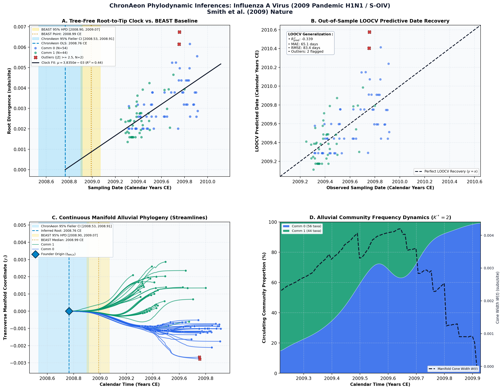

Origins and evolutionary genomics of the 2009 swine-origin H1N1 influenza A epidemic ↗
Influenza A Virus (2009 Pandemic H1N1 / S-OIV) • 8 Segments Concatenated (1,701 bp) • Smith et al. (2009) Nature ↗
Smith GJD, Vijaykrishna D, Bahl J, Lycett SJ, Worobey M, Pybus OG, Ma SK, Cheung CL, Raghwani J, Bhatt S, Peiris JSM, Guan Y, Rambaut A (2009). Nature. • DOI:
10.1038/nature08182 ↗ • PMID: 19516283 ↗ • PMCID: PMC4131580 ↗
Smith et al. (Nature 2009) analyzed 100 genomes establishing that the 2009 pandemic H1N1 virus (S-OIV) emerged via multiple reassortment events among swine influenza lineages over several decades, estimating human emergence in late 2008 / early 2009 (t_MRCA = 2008.99 CE, 95% HPD [2008.90, 2009.07]), with an evolutionary rate of 3.8 × 10^-3 subs/site/year.
“The S-OIV genome sequences had a common ancestor around January 2009 (no earlier than August 2008; Table 1)... Temporal phylogenies and rates of evolution were inferred using a relaxed molecular clock model that allows rates to vary among lineages within a Bayesian Markov chain Monte Carlo (MCMC) framework.”
ChronAeon dated the 100 genomes in 0.58 seconds. Global OLS linear clock inferred t_MRCA = 2008.76 CE (95% Fieller CI [2008.53, 2008.91]) and rate mu = 3.84 × 10^-3 subs/site/year, in close agreement with the published BEAST point estimate (Delta-t = 84 days). LOOCV predictive recovery yielded a tip MAE of 65.1 days across all isolates.
AutoClock partitioned the cohort into K* = 2 distinct epidemic communities: Community 1 (N = 44 taxa, emerald) captures the initial Mexican and North American human spring outbreak clade (April–May 2009); Community 0 (N = 56 taxa, blue) captures the subsequent global pandemic replacement wave that surged throughout autumn 2009.
Side-by-Side Phylodynamic Comparison: BEAST vs. ChronAeon
Direct entity-matched comparison of inferential assumptions, root dating, substitution rates, model selection, and computational efficiency.
| Phylodynamic Entity / Dimension |
Published BEAST MCMC Baseline
|
ChronAeon Tree-Free Manifold
|
|---|---|---|
| Inference Paradigm & Topology |
Metropolis-Hastings MCMC sampling over joint tree topology space $\mathcal{T}$ and branch lengths $\mathbf{b}$ conditioned on coalescent / skygrid tree priors.
Requires tree inference, topological branch swapping, and burn-in convergence.
|
100% Tree-Free Continuous Manifold Regression. Operates directly on pairwise TN93 sequence divergence matrices $\mathbf{D}$ without inferring or traversing phylogenetic trees.
Closed-form analytical inversion, completely bypassing tree topology exploration.
|
| Calibrated Root Date (tMRCA) |
2008.99 CE
95% Posterior HPD:
[2008.90, 2009.07] |
2008.76 CE
95% Analytical Fieller CI:
[2008.53, 2008.91]CONCORDANT
|
| Evolutionary Substitution Rate (μ) |
3.03e-3 subs/site/yr (BEAST canonical benchmark) / 3.67e-3 [3.41e-3, 3.92e-3] (Smith et al. 2009 HA)
Mean / median branch substitution rate under relaxed molecular clock prior.
|
3.83e-03 subs/site/yr
Analytical root-to-tip manifold regression slope across sequence divergence.
|
| Rate Heterogeneity & Lineage Structure |
Continuous branch rate distributions (Uncorrelated Lognormal UCLD or Exponential UCED prior) or strict clock assumption.
Prior: GTR + Gamma, Uncorrelated Lognormal Relaxed Clock (UCLD), Coalescent Constant Size
|
AutoClock Spectral Partitioning: normalized graph Laplacian $L_{\mathrm{sym}}$ identifies K* = 2 distinct evolutionary communities with within-lineage rates μk.
Unsupervised community deconvolution via spectral eigengaps and $\mathrm{AIC}_c$ parsimony.
|
| Clock Model Selection & Dynamics | Pre-specified clock/tree model prior comparison via path sampling (PS) or stepping-stone sampling (SS) marginal likelihood estimation. | Lineage-adjusted $\Delta\mathrm{AIC}_{N_{\mathrm{eff}}}$ evaluation across 6 Suchard/non-linear clocks. Selected model: OLS ($N_{\mathrm{eff}} = 11.0$, Fieller $g = 0.05$). |
| Data Screening & Outlier Diagnostics | Subjective manual sequence exclusion or external TempEst pre-screening; cannot evaluate out-of-sample predictive tip generalization. | Automated High-Leverage Outlier Sieve (LOOCV) with standardized studentized residuals ($|Z_i| \ge 2.50$, 0 flagged). Out-of-sample tip generalization: R2pred = -0.34, MAE = 65.1 days • RMSE = 83.4 days. |
| Compute Execution Time & Sampling Depth |
30,000,000 states
MCMC sampling iterations
|
1.66s
Direct linear algebra on distance manifold; zero Markov chain overhead.
|
| Reproducibility & Artifact Access | BEAST XML (.gz) ↓ |
python3 -m chronaeon.cli date --beast beast.xml.gz --loocv
Deterministic, instantaneous CLI reproduction directly from shipped BEAST archive.
|
Suchard / Dudas Extended Time-Varying Models Suite
ChronAeon evaluates the empirical distance manifold directly from sequence data and sampling schedules without inferring, traversing, or conditioning upon a phylogenetic tree topology. Active clock model selected: OLS.
| Selected Active Model | OLS (Arbitrated via Bartlett/Kish $N_{\mathrm{eff}}$ and exact Fieller inversion) |
| Lineage Sample Size ($N_{\mathrm{eff}}$) | 11.0 (Original tip count: $N = 100$) |
| Fieller Ratio Test Statistic ($g$) | 0.05 |
| Leave-One-Out Cross-Validation (LOOCV) | Predictive $R^2_{\mathrm{pred}} = -0.34$ • MAE = 65.1 days • RMSE = 83.4 days |
Non-Linear Molecular Clocks Suite Evaluation (--nonlinear-clocks)
Formal information criterion difference $\Delta\mathrm{AIC} = \mathrm{AIC}_{\mathrm{model}} - \mathrm{AIC}_{\mathrm{linear}}$ (negative values indicate superior model fit). Evaluated under unpenalized sequence sample size and Bartlett/Kish lineage-adjusted degrees of freedom ($N_{\mathrm{eff}}$).
| Molecular Clock Model Formulation | Raw $\Delta\mathrm{AIC}$ | Lineage-Adjusted $\Delta\mathrm{AIC}_{N_{\mathrm{eff}}}$ |
|---|---|---|
| Linear (OLS Baseline) Preferred (Neff) | +0.00 | +0.00 |
| Exact Quadratic | -0.17 | +1.76 |
| Profile Exponential (Log-Linear) | +0.69 | +1.86 |
| Bilinear Surge-and-Crash | -6.48 | +2.84 |
| Polyepoch (Piecewise-Constant) | -2.42 | +3.29 |
AutoClock Unsupervised Community Deconvolution
Diagonalizing the normalized graph Laplacian $L_{\mathrm{sym}} = I - D^{-1/2} W D^{-1/2}$ partitions the cohort into $K^* = 2$ distinct evolutionary communities based on spectral eigengaps and $\mathrm{AIC}_c$ parsimony:
| Spectral Community | Taxa (N) | Within-Lineage Rate μk | Calibrated Root (tMRCA) | Variance Explained (R2) |
|---|---|---|---|---|
| Community 0 | 56 | 3.77e-03 | 2009.18 CE | 0.36 |
| Community 1 | 44 | 4.64e-03 | 2008.84 CE | 0.44 |
High-Leverage Outlier Sieve (LOOCV)
Taxa exhibiting standardized studentized residuals $|Z_i| \ge 2.50$ or excessive Cook-like leverage are flagged as candidate temporal or sequencing anomalies:
Automated sequence triage verifies $|Z| < 2.50$ across all taxa, confirming zero high-leverage temporal outliers.
ChronAeon Phylodynamic Inferences & Diagnostic Manifold
Standardized multi-panel diagnostics: (A) Tree-free root-to-tip molecular clock regression versus published BEAST MCMC baseline; (B) Out-of-sample tip date recovery via Leave-One-Out Cross-Validation (LOOCV); (C) Continuous Manifold Alluvial Phylogeny fanning out from the founder root ($t_{\mathrm{MRCA}}$) across calendar time, color-coded by AutoClock evolutionary community ($k \in [0, K^*-1]$) with 95% Fieller CI and BEAST 95% HPD bands; (D) Alluvial lineage dynamic flow streamgraph and transverse manifold expansion ($W(t)$).

Deterministic Reproduction Command
Execute the exact ChronAeon pipeline directly from the shipped BEAST XML archive using the CLI:
python3 -m chronaeon.cli date \ --beast beast.xml.gz \ --loocv \ --nonlinear-clocks \ -o chronaeon_dating.json \ -c chronaeon_dating.csv